Bat
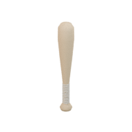
The original Wreckabulary models, proportions and colours are the current Wordbound baseline. The previous Wordbound art passes and new construction pilots remain separate and preserved.
Native presentation checks: 48 / 48 passed. The assigned default uses the actual original meshes with verified bounds and hand grips. Optional collection selection and custom overrides also passed. This is a presentation-test result, not a complete Windows/gameplay sign-off or a new visual-quality approval. Native result, 23 October 2026.
In Unity, select Presentation and choose Base Artwork → Original Wreckabulary. Wordbound Equipment is optional; per-item Overrides take priority. Recreate the playtest after changing the choice. Unity editing guide.
Actual original artwork in the Windows player, build 20261023T230521Z, captured during visible workshop run 230748. Original-scale timber boards, the original avatar and compact HUD remain intact. These are inspected player screenshots, not concept renders.

Visible workshop smoke: 5 / 5 checks passed. Opening, exact workshop save, all 90 required update waits, return and Undo completed; the player exited cleanly with no recorded console errors, exceptions or warnings. This diagnostic run is not an official gate replacement, an FPS result or full-game approval. The playtest completes in 17.240 seconds, including the same 90 update waits; this does not meet the 60 FPS target. Sustained performance and presentation polish remain open. Actual run checks · QA build manifest · Preserved earlier timeout.


Actual Unity Editor captures of the original SOFA, FAN, HAMMER, BAT and avatar, using the assigned original-art profile. These use neutral preview lighting and a fixed presentation pose; they are separate from Windows gameplay above.


Inspected reference views; owner approval remains open. Native capture completed on 23 October 2026. Subdued neutral lighting limits material judgement, and the held pose still needs a Windows gameplay view. CPU-baked mitten coordinates in the receipt are unvalidated contact diagnostics; the visible image and exact socket/grip match are separate observations. Detailed review and limits · Preserved first held-capture failure.
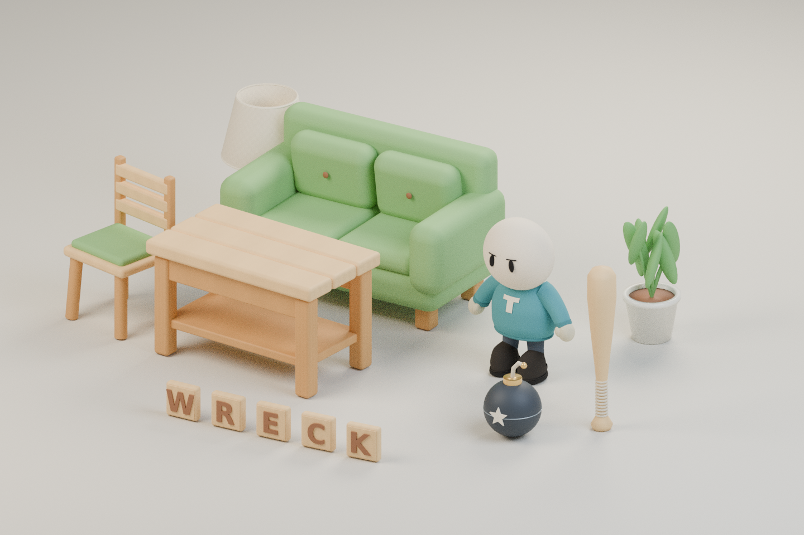

Actual original 192-pixel item renders. Open an icon or the original model; these small images establish identity and colour, not close-up material quality.

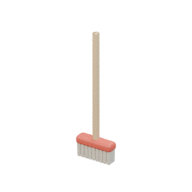
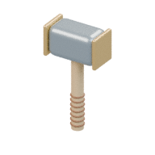
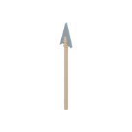
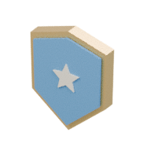
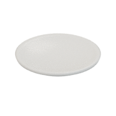
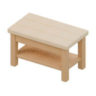
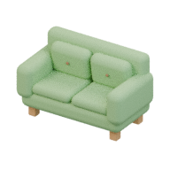
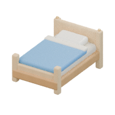
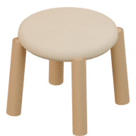
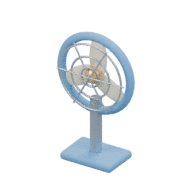
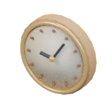
| Original Wreckabulary | Current default. Native presentation checks and the latest visible workshop smoke passed; actual Windows and isolated Unity item views above have been inspected. Sustained player performance, menu polish, Windows held-item appearance and owner approval remain open. |
|---|---|
| SOFA V4 | Optional experiment; no convincing visible improvement. Keep the original surface. Further sofa iterations are stopped. Actual matched detail pair · Review and receipts. |
| FAN / HAMMER pilots | Unapproved; not the default. Original-based construction details require actual rendered and Unity review. Pilot scope and evidence. |
| Earlier SOFA pilots | V1 had floating trim; V2 had a kinked seam. V3 failed its geometry preflight before rendering. All evidence is preserved. |
| Wordbound collections | First revision is preserved. DetailV2 is owner-rejected and archived below. Technical import passes do not establish acceptable appearance. |
Original-game comparison and current decisions
Rejected by James on 23 October 2026: these designs look old, generic and insufficiently detailed compared with the original game assets. They are preserved for inspection and are not the current default or target appearance.
Actual archived Blender renders and exports: 275 editable parts, 27 delivery meshes, two materials per item, up to 4,908 triangles and shared 512 × 256 maps. Those technical counts do not change the visual rejection.

0.172 × 1.018 × 0.172 m · 2 delivery meshes · 2 materials
FBX · GLB · Transparent icon

0.3 × 1.0212 × 0.095 m · 2 delivery meshes · 2 materials
FBX · GLB · Transparent icon

0.345 × 0.635 × 0.175 m · 2 delivery meshes · 2 materials
FBX · GLB · Transparent icon

0.17 × 1.235 × 0.068 m · 2 delivery meshes · 2 materials
FBX · GLB · Transparent icon

0.46 × 0.57 × 0.1877 m · 2 delivery meshes · 2 materials
FBX · GLB · Transparent icon

0.54 × 0.073 × 0.54 m · 2 delivery meshes · 2 materials
FBX · GLB · Transparent icon

1.2 × 0.72 × 0.691 m · 2 delivery meshes · 2 materials
FBX · GLB · Transparent icon

1.52 × 0.93 × 0.813 m · 2 delivery meshes · 2 materials
FBX · GLB · Transparent icon

1.035 × 0.818 × 1.58 m · 2 delivery meshes · 2 materials
FBX · GLB · Transparent icon

0.52 × 0.466 × 0.52 m · 2 delivery meshes · 2 materials
FBX · GLB · Transparent icon

0.522 × 0.821 × 0.25 m · 3 delivery meshes · 2 materials
FBX · GLB · Transparent icon

0.48 × 0.48 × 0.122 m · 4 delivery meshes · 2 materials
FBX · GLB · Transparent icon